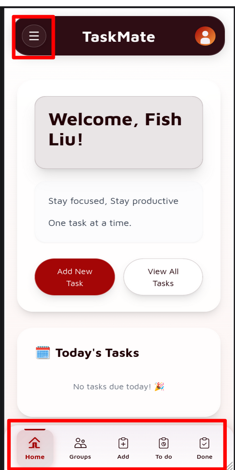
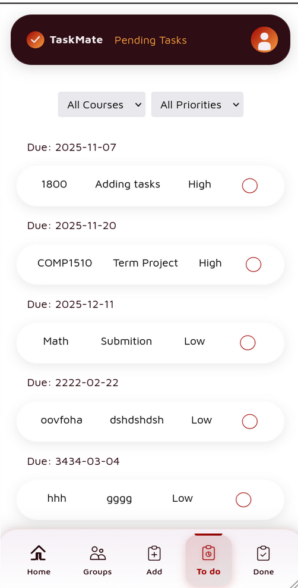
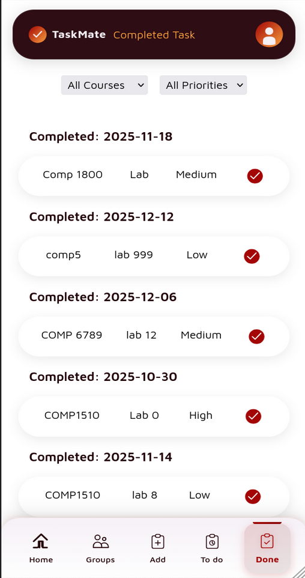
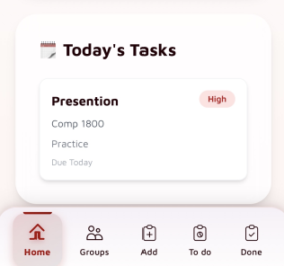
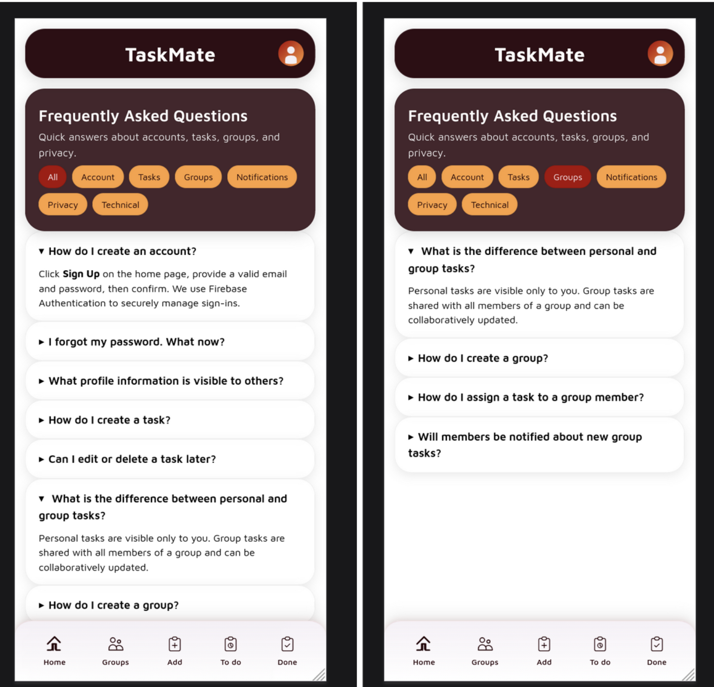

TaskMate is a fully functional, student-focused mobile-friendly
web application built to consolidate academic task management into
one clean, unified experience. Students can track pending
assignments, mark tasks as complete, organize by course and
priority, collaborate with groups, and get answers through a
built-in FAQ system — all from any device through the browser.
The project was built as part of BCIT's Design Thinking &
Communication course (COMM 1800, Team DTC 09), following the full
Design Thinking framework from problem identification through to a
working, deployed prototype.
Problem Statement
Target Users
Undergraduate, high school, and graduate students
Typically managing 4–6 courses simultaneously
The Challenge
Academic tasks and deadlines are scattered across multiple
disconnected apps
Students forget deadlines, lose motivation, and experience
increased stress
Existing tools are too complex or don't integrate scheduling
with tasks
Our Solution
TaskMate provides a unified, intuitive platform that consolidates
all academic tasks in one place with real-time updates, smart
filtering, and collaborative features designed specifically for
students.
Application Screens
TaskMate is built around five core screens, each designed for a
specific user need:

Screen 1: Home Dashboard Personalized
welcome with today's tasks

Screen 2: Pending Tasks All incomplete
tasks sorted by due date

Screen 3: Completed Tasks Progress
history and achievements

Screen 4: Task Details Priority badges
and course context

Screen 5: FAQ & Help Categorized Q&A
with expandable answers
Screen-by-Screen Breakdown
Home Dashboard (Screen 1)
The home screen greets users by name (e.g., "Welcome, Fish Liu!")
with the motivational tagline: "Stay focused. Stay productive. One
task at a time."
Key UI Elements:
Hamburger menu (top-left) for navigation settings
User profile icon (top-right)
"Add New Task" button (primary CTA — dark red)
"View All Tasks" button (secondary CTA)
"Today's Tasks" section — shows tasks due today or celebration
emoji when clear
Bottom navigation bar with 5 tabs: Home | Groups | Add | To Do |
Done
Pending Tasks / To Do (Screen 2)
The To Do view displays all incomplete tasks sorted
chronologically by due date.
Each task card shows:
Course name (e.g., COMP1510, Math, 1800)
Task name (e.g., Term Project, Submission)
Priority level: High / Medium / Low
Empty circle on the right to mark as complete
Filter controls allow users to narrow by Course or Priority for
quick access to relevant tasks.
Completed Tasks / Done (Screen 3)
The Done view mirrors the To Do layout but displays completed
tasks with a filled dark-red checkmark. Tasks are grouped by
completion date, acting as a progress tracker and motivation tool
— students can see everything they've accomplished over the term.
Task Card Detail (Screen 4)
A focused view of task information when expanded, showing:
Task name
Priority badge (color-coded)
Course identifier
Category / Course section
Due date status
FAQ / Help Page (Screen 5)
A fully built FAQ section with categorized, expandable questions.
Categories include: All | Account | Tasks | Groups | Notifications
| Privacy | Technical. Users can filter by category and expand
accordion-style items to reveal answers inline. This confirms the
app has real collaboration and group task management features.
Key Features
Personalized Dashboard — User-specific welcome
and customized task views based on enrolled courses
Today's Tasks Widget — Quick glance at urgent
tasks with priority badges on home screen
Pending & Completion Tracking — Separate views
for To Do and Done tasks with filtering
Group Collaboration — Shared group tasks and
collaborative assignment management
Smart Filtering — Filter tasks by course,
priority level, or due date
Firebase Authentication — Secure email and
password sign-in with encryption
Built-in FAQ & Help — Comprehensive,
categorized help system with searchable answers
Progress Motivation — Celebration emojis and
done-list history reinforce accomplishment
Technology Stack
Frontend
HTML5CSS3JavaScriptMobile-First DesignResponsive Web App